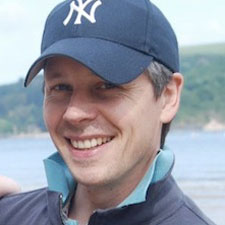

<div id="form">
    <div class="container">
        <div class="title">
            <h1>Festival of Code 2012</h1>
        </div>
        <p>Friday 10th to Sunday 12th sees the grand final of the Young Rewired State 2012 week. On the Friday night the young programmers will all come to the Custard Factory in Birmingham and have fireside chats whilst they code with wonderful people who are programmers doing great things, including representatives from Raspberry Pi, London Zoo and twilio amongst many others. Whilst they finish coding their apps and preparing their presentations they will be able to hear, chat and interact with some of the UK's greatest digital visionaries.</p>

        <p>They will have a massive sleepover in the Custard Factory preparing for the Saturday show and tell. Saturday brings a morning of heats where each centre will present in five concurrent streams, to five panels of esteemed judges with winners in four prize categories yet to be announced going forward to the Grand Finale in the afternoon.</p>

        <p>The afternoon finale will be compered by Dallas Campbell from Bang Goes the Theory, who is also a morning judge - a busy lad.

            <h3>The Finale judges are:</h3>
                
            <h3>Lily Cole</h3>
            
            <br />
            Photograph by James Moriarty for <a href="www.thenorthcircular.com">www.thenorthcircular.com</a>
            
            <p>The actress and ethical campaigner was was originally introduced to Rewired State to
help develop her social giving site <a href="http://impossible.com">impossible.com</a>. The new tech entrepreneur said about being
asked to judge for Young Rewired State; "I am really looking forward to Young Rewired State. I
can't wait to see what these kids create and discover genius coders."</p>

<p><a href="http://en.wikipedia.org/wiki/Lily_Cole">Lily Cole on Wikipedia</a><br />
<a href="http://www.youtube.com/watch?v=cSGn097HZ00">Beyond Ourselves - Becky Anderson, Lily Cole & Jimmy Wales - Zeitgeist 2012</a></p>

            <h3>Conrad Wolfram</h3>
            

<p>Mathematician, programmer, technologist and founder of Wolfram Research
said; "Coding is the technical language of creativity, so it's great to be helping to judge our
brightest young coders' work. And what better year than Turing's centenary?"</p>

<p><a href="http://www.conradwolfram.com/">conradwolfram.com</a></p>

<h3>Aral Balkan</h3>


<p>Experienced designer dnd developer said; "Programming taught me that I can make
things, that I can change the world around me, and that my imagination truly is the only limit. That's
why events like Festival of Code are so important. Programming is the new literacy and initiatives
like the Festival of Code are essential catalysts in inspiring and empowering the Shakespeares of
tomorrow".</p>

<p><a href="http://aralbalkan.com/">aralbalkan.com</a></p>
  
<h3>Jonathan Luff</h3>



<p>Advisor at No 10 and Director of the GREAT campaign
"I am really pleased to be a Young Rewired State judge again. If the last time is anything to go by,
my fellow judges and I will be blown away by the talent and creativity of the kids involved. I can't
wait to see what they can produce."</p>

<p><a href="http://uk.linkedin.com/pub/jonathan-luff/39/993/b77">Jonathan Luff on LinkedIn</a></p>

<p>Prizes are awarded in the evening and then everyone can relax and celebrate underneath the arches of the Custard Factory.</p>

<p>The schedule for the Festival of code in full is here: <a href="http://lanyrd.com/2012/festival-of-code/">Festival of Code on Lanyrd</a></p>

<p>To attend the festival on the Saturday show and tell, please sign up using the form <a href="http://yrs12foc.eventbrite.com/">here</a>. <strong>Be warned, we are proudly not funded by government, your tax money is better spent elsewhere, we rely only on sponsorship and run this event at no profit, every penny goes into making this happen (not people fees) - which is quite expensive even though we get away with a lot of donated stuff... and people. However, we cannot stretch to supplying you with food and booze, even though we would love to, so please bring cash with you for the bar and food concessions we will have on site.</strong></p> 

<p>A big Thank You to the businesses and organisations of Birmingham that have helped us be able to put on this year's Festival of code.</p>

        <div class="grid3">
          <p><a href="http://uk.linkedin.com/in/lararatnaraja"></a></p>
        </div><!-- closing grid3 -->

        <div class="grid3">
          <p><a href="http://www.custardfactory.co.uk/"></a></p>
        </div><!-- closing grid3 -->
        
        <div class="grid3">
          <p><a href="http://bigcatgroup.co.uk"></a></p>
        </div><!-- closing grid3 -->

        <div class="grid3">
          <p><a href="www.bcu.ac.uk/business"></a></p>
        </div><!-- closing grid3 -->
        
        <div class="grid3">
          <p><a href="http://www.birmingham.ac.uk/index.aspx"></a></p>
        </div><!-- closing grid3 -->

        <div class="grid3">
          <p><a href="http://www.microteam.co.uk"></a></p>
        </div><!-- closing grid3 -->
        
        <div class="grid3">
          <p><a href="http://www.digitalbirmingham.co.uk"></a></p>
        </div><!-- closing grid3 -->


    </div><!-- closing container -->
</div><!-- closing form -->
